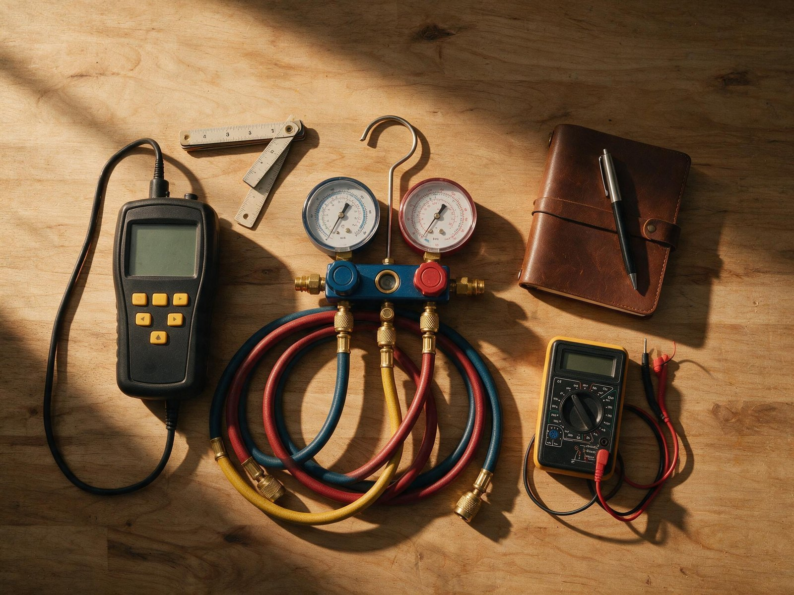
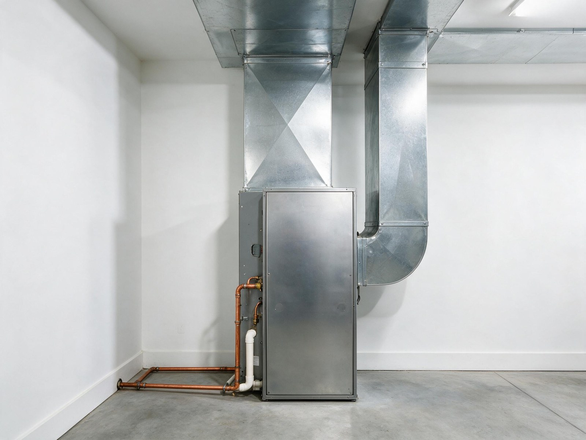

By the Editorial Team | Published: August 2026 | Last Updated: August 2026
Why Duct Design Belongs in the Same Conversation as Load Calculation
Duct design is the third of the three ACCA manuals that anchor residential cooling design. Manual J produces the loads. Manual S selects equipment sized to those loads. Manual D sizes the duct system that actually delivers the equipment capacity to the rooms that need it. Skipping Manual D is a common cause of installations where the right equipment was picked but rooms still miss setpoint, because the airflow arrives unevenly or the blower fights static pressure it was not rated for.
The Manual D procedure takes the per-room loads from the Manual J run, converts them to per-room cubic feet per minute of required airflow, and then sizes trunks, branches, and diffusers so that airflow arrives at each room within the equipment rated external static pressure. It is a design activity, not a rule of thumb. Rules like eight-inch trunk with six-inch branches produce duct systems that occasionally work by luck and frequently do not.
The Airflow Conversion
Airflow requirement per room is derived from the room sensible load and the temperature difference between the supply air and the room air. The standard formula is CFM equals sensible Btu per hour divided by (1.08 times the design temperature rise), where 1.08 is the standard air constant at typical conditions. A room with a 4,320 Btu/hr sensible load and a 20-degree design rise needs 200 CFM of conditioned air.
Once each room CFM requirement is set, the trunk carries the sum of all downstream branch requirements. Every fitting, elbow, boot, and diffuser adds pressure loss, expressed in equivalent length of straight duct. Manual D tallies those equivalent lengths across the design longest and shortest paths, checks that the friction rate lands in the target range (typically 0.08 to 0.10 inches of water column per 100 feet), and adjusts sizes accordingly.
External Static Pressure and Why It Governs Everything
Every air handler and furnace is rated for a maximum external static pressure, typically 0.5 inches of water column for residential equipment. That number is the total pressure the blower can overcome across the entire duct system, from the return grille to the supply diffuser. If the installed duct system exceeds 0.5 inches, the blower cannot deliver its rated airflow, and every downstream calculation (including the Manual S equipment selection) becomes invalid.

The static pressure budget divides across the components:
- Return path (grille, filter, return trunk): typically 0.15 to 0.20 inches of water column.
- Coil and cabinet: 0.15 to 0.25 inches, taken from manufacturer data at design airflow.
- Supply trunk, branches, and diffusers: whatever remains from the 0.5-inch budget, typically 0.10 to 0.20 inches.
The single most common cause of over-static installations is an undersized return path. A one-inch pleated filter in a small return grille can pull 0.25 inches by itself, which leaves almost no budget for the supply side and forces the blower into deratable operation. Manual D catches this on paper before the ductboard gets cut.
Friction Rate and Duct Sizing
Friction rate is the design target for how much static pressure the duct system is allowed to lose per 100 feet of equivalent length. The rate is calculated by dividing the available static (after coil, cabinet, and return budget) by the total equivalent length of the longest supply run, then multiplying by 100. A typical residential system lands at 0.08 to 0.10 inches per 100 feet.
Once the friction rate is set, duct sizes are read from an ACCA ductulator or the ductwork sizing table in Manual D. Higher friction rates permit smaller ducts (more restrictive), lower friction rates require larger ducts. The trade-off is between duct cost and blower energy: undersized ducts save material but increase fan energy use and noise, while oversized ducts cost more but run quieter and give the blower headroom.
Duct Leakage and Its Effect on Delivered Capacity
Ductwork leakage is measured in cubic feet per minute at a reference pressure (25 pascals for total leakage, or CFM25). The 2021 IECC caps total duct leakage at 4 CFM25 per 100 square feet of conditioned floor area when the ducts are in unconditioned space. Systems built without leakage testing frequently exceed twice that number.
Duct leakage translates directly into lost capacity, and in unconditioned attics it also imports moisture through return leakage on the suction side. The Manual D design assumes a leakage rate; if the installed system leaks more, the delivered capacity drops, room airflows underperform, and the equipment appears undersized even though the load calculation and selection were correct.

The high-leverage sealing points on a residential duct system, ranked by typical contribution to total leakage:
- Boot-to-drywall connections at every supply register and return grille.
- Trunk-to-plenum joints, especially at the air handler cabinet.
- Branch takeoffs where flex duct connects to metal trunks.
- Return-side platform returns and stud-cavity returns (avoid entirely when possible).
- Filter rack seams and access-panel gaskets on the air handler.
Friction Rate Ranges by System Type
| System type | Typical friction rate (in. w.c. per 100 ft) | Notes |
|---|---|---|
| Standard residential, sheet metal | 0.08 to 0.10 | Baseline; used in most single-family design |
| Flex duct branches | 0.05 to 0.08 | Lower; flex has higher inherent friction, size up |
| High-static equipment (ECM blowers) | 0.10 to 0.12 | Slightly higher permitted; still watch static budget |
| Retrofit into existing plenum | 0.05 to 0.08 | Constrained; may require duct redesign, not just resizing |
Frequently Asked Questions
Is Manual D required if Manual J and Manual S are done?
Manual D is referenced by the International Residential Code alongside Manual J and Manual S as the accepted procedure for duct design. Skipping it while doing J and S produces a system with correct equipment tonnage and incorrect airflow distribution, which is one of the most common patterns in the AC works but this room is always warm complaints. All three manuals are required to produce a design that performs as calculated.
Can flex duct be used throughout or should trunks be sheet metal?
Flex duct is acceptable for branch runs when installed straight, supported at manufacturer-recommended intervals, and sized for its higher inherent friction (typically one duct size larger than the equivalent metal branch). Long trunk runs in flex are difficult to install without sag and bend penalties that inflate the friction rate. Best practice on modern residential design is metal trunks with flex branches, sized per Manual D, not by convention.
What is the practical difference between a Manual D design and a rule-of-thumb duct layout?
A Manual D design starts from per-room loads and produces a duct layout that delivers the required airflow to each room within a specified friction rate. A rule-of-thumb layout uses standard sizes (an eight-inch trunk with six-inch branches, for example) regardless of load or run length. The results diverge sharply in houses with long branches, multiple stories, or asymmetric room loads, which is most modern residential construction.
How is static pressure measured after installation?
External static pressure is measured with a manometer (analog or digital) reading pressure differences across the air handler. The technician drills small test ports on the supply and return sides of the coil and cabinet, records the readings during equipment operation, and compares the total against the manufacturer rated maximum. Static above rated is a red flag for a duct system that cannot deliver design airflow. TrueFlow plates and similar tools also measure airflow directly at the air handler.

Why do so many installed systems have static-pressure problems?
Installed systems trend toward over-static because return sides are frequently under-designed. A single return grille sized for aesthetics or drywall convenience rarely provides the throat area needed for the required CFM. Filter racks add pressure that is invisible until measured. Manual D flags both issues at design time, but only if it is actually run.
Does an ECM blower solve a static-pressure problem?
Electronically commutated motor (ECM) blowers can compensate for higher static than a permanent split capacitor (PSC) blower, holding rated airflow up to a higher pressure ceiling. That masks the underlying duct problem rather than solving it: the blower runs at higher watts, noise increases, and delivered capacity still drops if the duct system leaks or has poor branch balance. The correct fix is a properly designed duct system with the ECM blower operating well within its curve.
How does duct leakage testing work?
Duct leakage testing seals every register and return with removable tape or plates, connects a calibrated fan to the duct system through the air handler cabinet, and pressurizes the system to a reference pressure (typically 25 pascals). The fan calibrated airflow at that pressure equals the total leakage rate in CFM25. The 2021 IECC and most state adoptions require this test on all new-construction residential systems and set the pass threshold at 4 CFM25 per 100 square feet.
Should ducts always be brought into conditioned space?
Ducts in conditioned space perform measurably better than ducts in unconditioned attics or crawls, because they avoid both conduction losses to the extreme ambient and moisture penalties from leakage. On new construction, sealed attics or drop soffits routinely bring the duct system into conditioned space at modest incremental cost. On retrofits, the change is more expensive and often only makes financial sense during a major remodel. When ducts stay in an unconditioned attic, tight sealing and R-8 insulation are the minimum interventions.
Residential Cooling Load Design: A Sizing and Equipment Primer
Residential Cooling Load Design: A Sizing a Equipment Primer